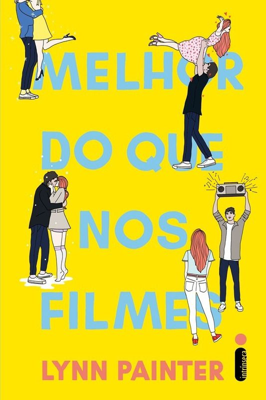

Capitães da Areia - Jorge Amado 4,7⭐

É Assim que Acaba- Colleen Hoover 5⭐
Melhor Que Nos Filmes - Lynn Painter 4,8⭐
Os Sete Maridos de Evelyn Hugo - Taylor Jenkins 4⭐
As Vantagens de ser Invisível - Stephen Chbosky 4,7⭐

Todas as suas Inperfeições - Colleen Hoover 4,8⭐
As veias abertas da América Latina - Eduardo Galeano 5⭐
Tudo o que eu sei sobre o amor - Dolly Alderton 4,9⭐
Mulherzinhas - Louisa May 5⭐

A Rainha Vermelha - Victoria Aveyard 4,8⭐